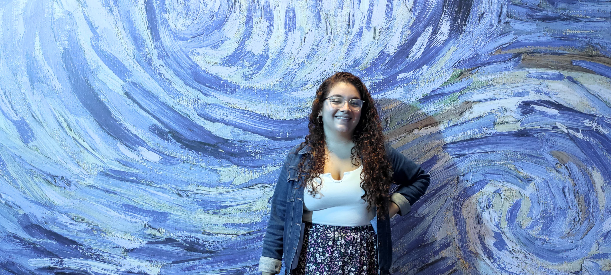

Soy Maria
Soy vecina de Heredia. Tengo más de 6 años trabajando en tecnología en puestos como soporte técnico, global help desk y analista de escalaciones. Me interesa desarrollarme en ciberseguridad.
Ella es Luna, fue mi primera perrita. Hace unos años tuve que tomar la decisión de dormirla porque ya estaba muy mal de salud.

Fue la perrita más dulce y chineada, pero a la vez protectora. Tengo muchos recuerdos felices con ella. Le gustaba ser aspiradora, porque todo lo que se caía al piso se lo comía. También le gustaba que le rascaran las orejas y el trasero.
Lo que más me gustaba de ella, era su color de ojos y nariz que eran cafés claros y le combinaba con el pelo, y que tenía un copete y solían pensar que se lo pintábamos.